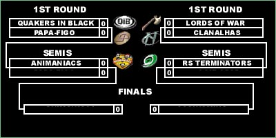

|
|
|
|
|
Challenge Smackdown Brazil Group-Games Finished & Playoff Preview - JudgeDredd - 22/07/01 Less than two weeks left to start the playoffs and we have almost nothing in hands. Some facts must be emphasized. This league runs with the objective of seeing everybody with exactly the same eyes in front of anyone, that's ok and correct, therefore this is not an invitational league, and consequently this is a free-subscribe league. We have a good number of people who are well deliberate and are involved with the daily of the quake as we have another good number of people who does not have the same good intentions. Where I'm trying to get? That's easy, because after watching 15 W.O. out of 18 games I believe there is something wrong. Nothing else comes to my mind except that all of this could be avoided. And why is that? Well, playoffs starts 29th of July and all qualified teams for the post-season are exactly part of the teams sugested previously to be invited for the league, and overlapping, in this case, the original Challenge-Smackdown registration system format. It didn't happen. I made my mistakes of course delaying the tournament, but so I will only leave my suggestion here for next time, because if it depends of me, false idealized people won't get close to the league, no more. Ok!! Lets get inside the action. First of all for who doesn't understand our division playoff qualify settings, it is written in a base of 6 teams advancing, this is due to compensate a matter of a low number of participants. Then you ask me how I will handle a playoff with 6 teams if Challenge-Smackdown works with best of 3 maps with 2 teams each round. Here you can find something very similar to NFL Playoffs, because the two top teams qualified will already be set in the semis, so they wait the other 4 teams kill each other. Here you can find the 6 teams who are now fighting to the trophy. #1 - RS Terminators (3-0) (324)These positions bring us the following brackets:  Remembering it is a single-round elimination needed to advance to the following round. Another important issue is that if Papa-Figo beats Quakers in Black then automatically the Lords of War vs Clanalhas winner series will face the Animaniacs in the semis. Here you can watch a situation where Quakers in Black at the same time was favored and prejudiced, I'm saying that because QiB has a 3-0 campaign because they got 3 W.O. in group 1, so you can say they were lucky because never faced a defeat possibility but they doesn't have a positive frag balance, and Terminators and Maniacs have. I tried to study a properly option to handle with this but I went back to the WildCard games in the end, and being honest that would not help too much because it would take a whole month of games to decide teams positions and Smackdown 3 is getting close. All teams advancing to the post-season, the real season, had their problems in the group-games but they respected the league and tried to do their work as best as possible. Below you can watch a quick brief about all games from group-games.
GROUP 1
GROUP 2
GROUP 3
There is not too much else to say about regular games, except thanks very much for the Full Connect to their professional composure with the league since they are leaving us now after fighting in the most difficulty group. I must say I was wrong about Black Hawks and I regret for inviting them to the league. I won't say here they were afraid of playing after watching some demos with strafe jumping in the game and I won't say also they called strafe jumping of cheating, but lets remember there will always have place for cowards and weaks outside the QuakeWorld. The Playoffs are coming in a great time because it will be the first event of this year in our country to measure teams skills and powers. You must agree with me it's almost impossible to foresee anything between these teams when you just have to quickly remember we had almost zero games done. Taking a look in the 4 majors for the topseeds you can say they are well close to maintain a good and health starting line-up. I was talking to Patrick, one of the managers of Quakers in Black and he told me some names who will be active for them and what I could see was just experienced and skilled players like Rider, Fear, Fulgore and others. I don't know very well the current Maniacs main players but they will have along side their great leader Impulso and gifted players as Yronman. For the Terminators, rumors say they will be able to gather Carlos, Monster, Volcano and Murdoch, it's not good news for a lot of people. The Lords of War current situation is a little complicated now, but they have something the others don't have, their heads still for prize due to past wars, and there is no better place to set things up than a world league. Lords of War and Clanalhas will open the 1st round in 9 days from now, both teams are facing structure problems in their administration and will be no surprise who advances. Quakers in Black and Papa-Figo are next and just a miracle can bring any hope to the northeasterner team. If the lords defeat Clanalhas, no matter who comes from the other 1st Round Series because either a possible Lords of War versus Animaniacs or versus RS Terminators, well man, for sure things will get out of control with their rivalries, and I love that. |